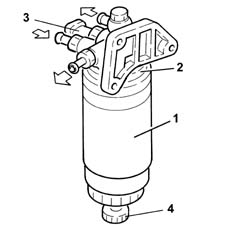

Introduction - FUEL CIRCUIT PUMP/AND DEVICES
- Path
- Descriptions > 10 ENGINE UNIT > 1044 FUEL CIRCUIT PUMP/S AND DEVICES > Introduction - FUEL CIRCUIT PUMP/AND DEVICES
- Kind
- system description
- Applies to
- all engines; all production periods
- Interactive page
- https://sloeber94.github.io/elrnDB-fMltpl/en/#/2892428
Applies to: engines: 1.9 JTD 8V; all production periods
It is the cartridge type with a filter element (1) made up of a pack of paper discs with a filtering surface area of 5300 cm2 and a filtration degree of 4 - 5 μμ.
The filter has a fuel pre-heating device (2) controlled by a thermal switch (3) fitted on the actual filter. When the temperature of the diesel is below 6°C an electrical resistor heats it up to a maximum of 15°C before sending it to the injection pump.
There is a plug (4), in the base of the fuel filter cartridge, for draining the water from the filter.

LOW PRESSURE REGULATING VALVE
The valve is located on the fuel filter and consists of a ball loaded by a calibrated spring.
When the fuel supply pressure acting on the ball overcomes the load of the counter spring, some of the fuel is recirculated to the tank through the return pipe.